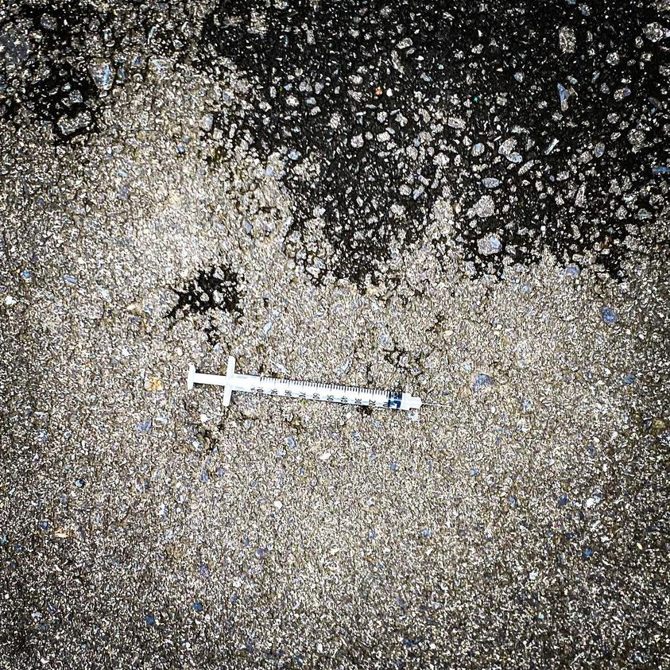

Timeline photos
I wanted to show you this needle I found on the street. It’s not a particularly interesting needle in and of itself. I’ve shown you needles I’ve found on the street before.
What makes this needle interesting is WHERE I found it. I came across it one morning in Tokyo.
Furthermore, it wasn’t in Shinjuku, the red light district of Tokyo where you have to be aware of Nigerian scammers trying to convince you to spend an hour with some Japanese ladies for 3500 yen (about $25). (The scam is that after the hour is up they tell you the price is 20,000 yen. And they will get their money one way or another).
No. This was found in Asakusa. This is where you will find the Senso-ji Buddhist temple, Tokyo’s oldest and Nakamise-dori Street - an amazing shopping street where families from all over the world come to experience Japanese culture and food.
Tokyo is the largest city in the world and I only saw 3 homeless people in the 2 weeks I was there.
People love Japan because it is so beautiful, organized and clean and safe. But a big reason for that is that image is critically important.
They have problems. High alcohol rates. High suicide rates. People aren’t having babies because they work too hard and don’t have time for them. (Their playgrounds all look like afterthoughts of stuff we had in our playgrounds in the ‘70s.)
I’m not saying this to dis Japan. I LOVED it there. I like it the same reason I like the gated community: Lakeside.
I like it because it’s a lie. And people with money get to pretend the suffering doesn’t exist.
I actually feel that America is more advanced emotionally than Japan. We are closer to truly addressing our problems than Japan.